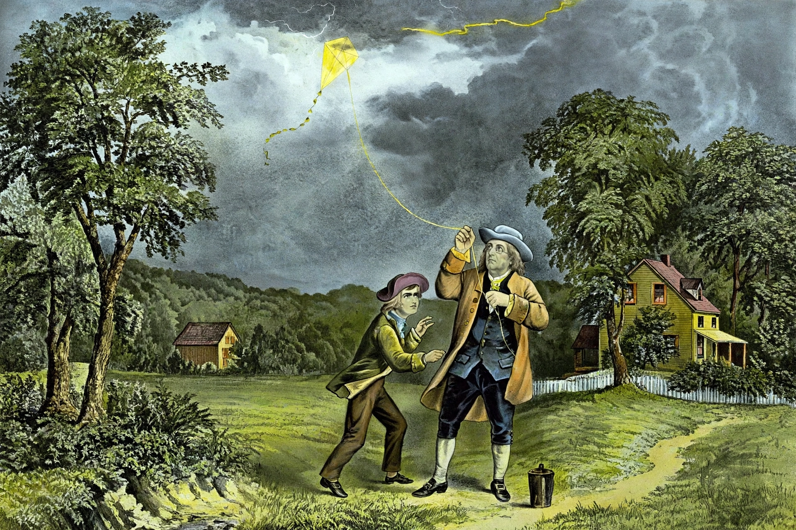

El Experimento de la Cometa
La Naturaleza Eléctrica del Rayo
En junio de 1752, Benjamín Franklin llevó a cabo su experimento más célebre y arriesgado en Filadelfia. Durante una fuerte tormenta eléctrica, voló una cometa con una estructura de seda equipada con una punta de alambre afilada. Al final del hilo de cáñamo, ató una llave metálica para recoger la energía. Cuando un rayo impactó la cometa, la electricidad viajó por el hilo húmedo hasta la llave, provocando una chispa al acercar su mano. Con esta arriesgada maniobra, Franklin demostró científicamente que los rayos de las tormentas son una forma de descarga eléctrica natural.
